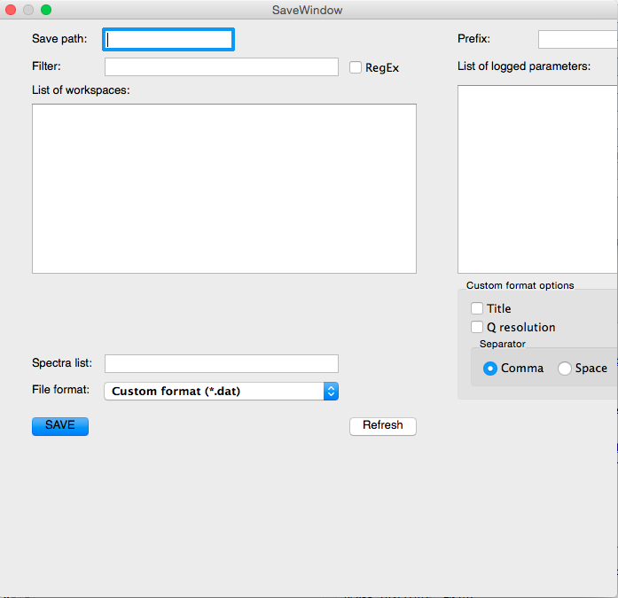
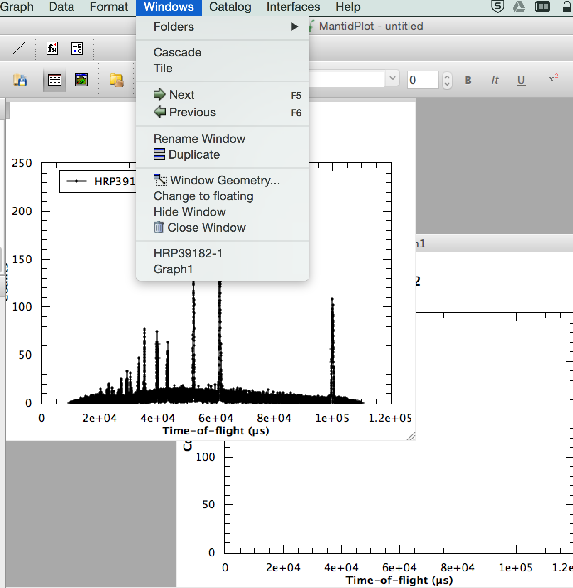
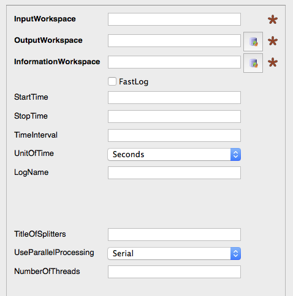
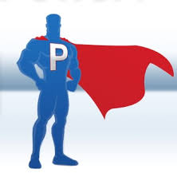
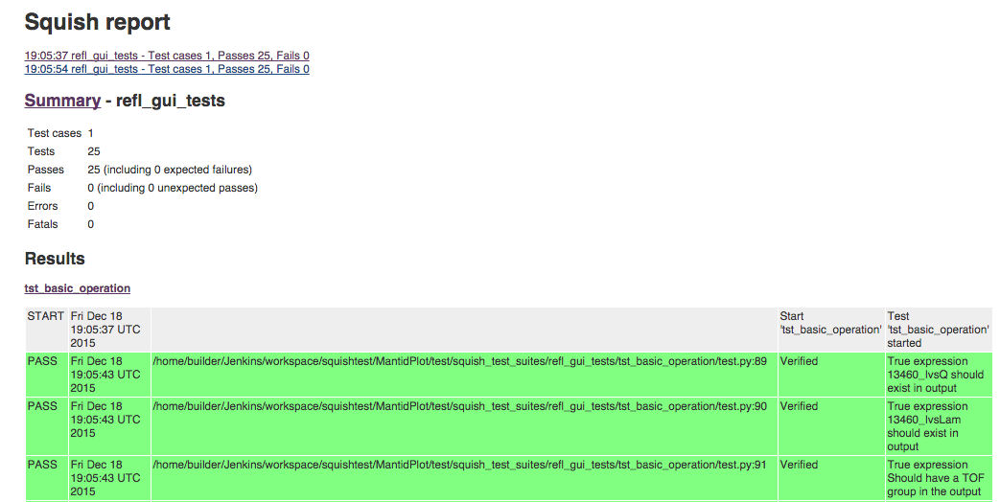
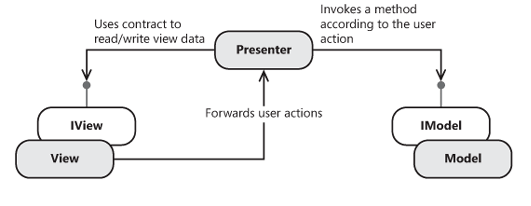
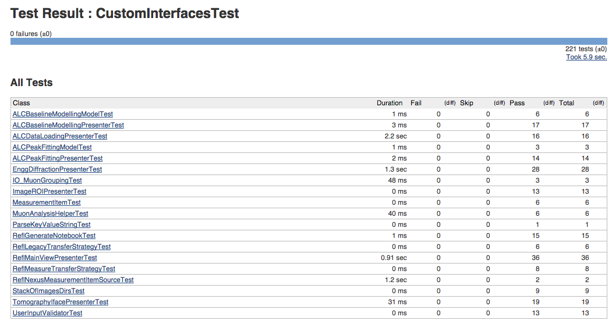

Useability and Reliability
What do our User Interfaces say about Mantid?
Author Owen Arnold
About The Mantid Project
- Unique example of cross-facility, international collaboration in science and engineering
- 62 Developers contributed over the last 12 months
- Zero compiler warnings on all target platforms
- Over 9x103 unit tests, over 3x102 system tests, over 1x102 performance tests
- Highly Commended at UK IT Awards 2015
But to Most Users
“Custom interface X IS the Mantid Project.”
We shipped this in version 3.5

We shipped this in version 3.5

We shipped this in version 3.5

We have also shipped broken UIs in full releases of Mantid.
We Can Fix Things
Lets split the problems up
- Improving reliability
- Improving useability
Improving Reliability
To improve the reliability we need feedback. These three approaches have been shown to work.
Improving Reliability: Power User

Example: ISIS SANS
Improving Reliability: Squish

Improving Reliability: MVP


Improving Useability
To improve the usability we also need feedback
Things we should do (and often do already)
- UI Mockups using tool like Basamiq
- Paper prototyping
- Software Prototypes
- Component based software engineering
Things We Should Stop Doing
- Say things like:
“We'll quickly create a GUI as a first-cut.”
- Have less new developer work on “less critical.” things such as GUIs
- Lean on late unscripted testing to uncover bugs
- Assume that beta testers are all equally thorough
To Most Users
“Custom interface X IS the Mantid Project.”